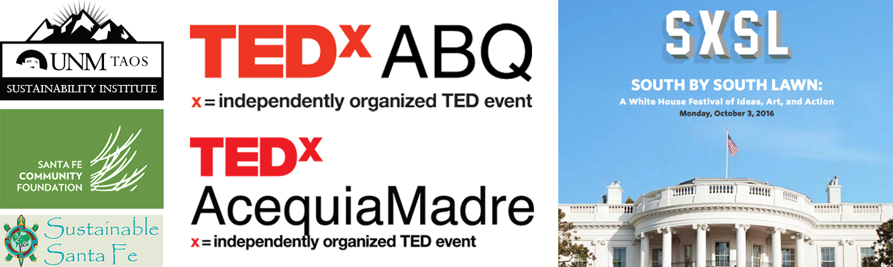

Founder and Director of Archinia and the non-profit Architecture for Everybody, Rachel Preston Prinz has spent more than 20 years studying and celebrating the craft of architecture and the Genius Loci, or Spirit of Place... as exemplified in design, placemaking, and cultural and historic preservation. Rachel has served as a preservation commissioner in Taos, as the host of the UNM-Taos Sustainability Institute, co-host of TEDxABQWomen, and moderator of numerous panels. Rachel has given multiple TEDx and Pecha Kucha talks on design.
Rachel’s work has been featured on television on HGTV, Bravo, NMPBS, and Canadian PBS; in print in Reader’s Digest, Trend, THE, Fine Art Connisseur, and Inc. magazines. She’s been interviewed by Robin Morgan, Giovanna Pressley, Liz Neely, and Megan Kamerick, and she’s been featured in numerous articles, talks, podcasts, interviews and books on design, leadership, and finding courage in difficult circumstances.
Rachel is an expert people connector and "sparkplug" who brings a new and exciting energy to everything she does.
And she's going blind with macular degeneration.
Education
- Masters of Architecture and Certificate in Historic Preservation, Texas A&M, 1998
- Bachelors of Environmental Design, Texas A&M, 1995
Accreditations
- Exceeds the Secretary of the Interior’s Guidelines in Historic Architecture + Architecture History
- Listed at NMSHPO as an Architectural Historian
- NCARB certified
- American Institute of Architects Associate member; Past Associate Director - Region of the Virginias; Past Architecture Week Chair; Award of Merit for Public and Community Service
Accolades
- 2019 Leaders of Design Council
- 2018 US Department of Arts and Culture Affiliate
- 2018 Global Ties Ambassador
- 2018 Council on International Relations Ambassador
- 2018 Women Talk Design Speakers Group
- 2017 Emerging Social Sector Leaders Peer Mentor. Santa Fe Community Foundation
- 2012-2014 Taos Historic Preservation Commission
- 2012 Co-Host and Speaker Coach. TEDxABQ Women
- Fellow: LT Jordan Institute
- Fellow: San Antonio Conservation Society
Awards
- 2018 New Mexico Women in Film Scholarship Award
- 2017 Santa Fe Mayors Sustainability Award runnerup
- 2017 Resilient Communities Award
- 2016 Women of Influence Award. Albuquerque Business First
- 2016 Emerging Social Sector Leaders cohort. Santa Fe Community Foundation
- 2016 Recognition at South by South Lawn festival for the community impact of her work. The Obama White House.
- American Collegiate Schools of Architecture Award
- Consortium for the Advancement of the Arts and Education Award
Favorite Projects
Preservation Plan + Restoration of homes at Acoma Pueblo
with Barbara Felix Architecture + Design
National Museum of the American Indian
with FPW Architects + Smithgroup Architects

Narbonne Cathedral
with Vivienne Paul
Luray Depot
with FPW Architects

Villa Emo
at Fanzolo